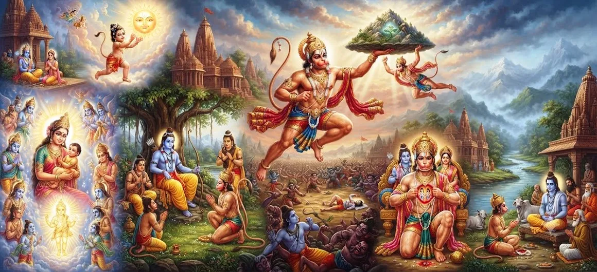

हनुमान अवतार और उनकी कहानी
शतरुद्र संहिता का अध्याय 20 हनुमान के रूप में भगवान शिव की पवित्र अभिव्यक्ति प्रस्तुत करता है, एक दिव्य व्यक्ति जो असाधारण शक्ति, अटूट भक्ति, ज्ञान, साहस, विनम्रता और निस्वार्थ सेवा के लिए मनाया जाता है।
हनुमान की कहानी शिव की शक्ति और भगवान राम के प्रति समर्पित भक्ति को एक साथ लाती है। उनकी अपार योग्यताएँ कभी भी व्यक्तिगत गौरव का स्रोत नहीं बनतीं; इसके बजाय, उन्हें पूरी तरह से ईश्वरीय उद्देश्य की सेवा में लगा दिया जाता है।
हनुमान के माध्यम से, अध्याय भक्ति के एक आदर्श को प्रकट करता है जिसमें शक्ति ज्ञान द्वारा निर्देशित होती है, साहस अनुशासन द्वारा नियंत्रित होता है, और सेवा आध्यात्मिक महानता का मार्ग बन जाती है।
अध्याय 20 की मुख्य बातें
शिव की अभिव्यक्ति
हनुमान को भगवान शिव से जुड़ी एक पवित्र अभिव्यक्ति के रूप में देखता है।
दिव्य जन्म
दुनिया में हनुमान की दिव्य उपस्थिति के आसपास की पवित्र परिस्थितियों को प्रस्तुत करता है।
असाधारण ताकत
हनुमान से जुड़ी अपार शारीरिक और आध्यात्मिक शक्ति पर प्रकाश डालता है।
राम भक्ति
यह हनुमान की भगवान राम के प्रति अटूट भक्ति और पूर्ण समर्पण को प्रकट करता है।
बुद्धि और अनुशासन
यह दर्शाता है कि बुद्धि और आत्म-नियंत्रण द्वारा शासित होने पर शक्ति वास्तव में दिव्य कैसे बन जाती है।
निःस्वार्थ सेवा
हनुमान की महानता की सर्वोच्च अभिव्यक्ति के रूप में परमात्मा की सेवा को स्थापित करता है।
इस अध्याय में मुख्य विषय
- 01 हनुमान की दिव्य अभिव्यक्ति →
- 02 हनुमान का पवित्र जन्म →
- 03 हनुमान का बचपन और दैवीय शक्ति →
- 04 बुद्धि, शिक्षा और आत्म-नियंत्रण →
- 05 भगवान राम से मुलाकात →
- 06 भगवान राम के लिए हनुमान की सेवा →
- 07 शक्ति के साथ भक्ति जुड़ी →
- 08 भक्ति के आदर्श के रूप में हनुमान →
- 09 हनुमान कथा की आध्यात्मिक शिक्षाएँ →
- 10 महेश के अवतार में परिवर्तन →
हनुमान की दिव्य अभिव्यक्ति
भगवान शिव और परमात्मा की दिव्य अभिव्यक्तियों से जुड़ी परंपराओं में हनुमान का एक अद्वितीय स्थान है। उनका सम्मान न केवल असाधारण शारीरिक शक्ति के लिए किया जाता है, बल्कि उन आध्यात्मिक गुणों के लिए भी किया जाता है जो उस शक्ति को पवित्र बनाते हैं।
शिव के साथ हनुमान का जुड़ाव इस विचार को व्यक्त करता है कि दैवीय शक्ति पूरी तरह से धर्म और भक्ति की सेवा के लिए समर्पित रूप में दुनिया में प्रवेश कर सकती है।
इसलिए उनकी उपस्थिति शक्ति और विनम्रता, साहस और ज्ञान, कार्रवाई और समर्पण के मिलन का प्रतिनिधित्व करती है।
हनुमान का पवित्र जन्म
हनुमान का जन्म दैवीय उद्देश्य से जुड़ी एक पवित्र घटना के रूप में याद किया जाता है। उनकी माता अंजना और पिता केसरी उनके सांसारिक स्वरूप के पारंपरिक विवरण में केंद्रीय व्यक्ति हैं, जबकि दिव्य कृपा उनके जन्म की असाधारण प्रकृति से जुड़ी हुई है।
विभिन्न भक्ति परंपराएँ हनुमान के दिव्य जन्म के विवरण में भिन्नताएँ रखती हैं। फिर भी वे लगातार इस बात पर जोर देते हैं कि उनकी उपस्थिति एक उच्च उद्देश्य और धर्म की सुरक्षा से जुड़ी थी।
प्रारंभ से ही, हनुमान के जीवन को एक सामान्य सांसारिक अस्तित्व से कहीं अधिक के रूप में प्रस्तुत किया गया है। उनका जन्म असाधारण सेवा के जीवन का मार्ग तैयार करता है।
हनुमान का बचपन और दैवीय शक्ति
बचपन से ही हनुमान एक असाधारण ऊर्जा प्रदर्शित करते हैं जो उन्हें सामान्य प्राणियों से अलग करती है। उनके युवा साहसिक कार्यों में अपार शारीरिक शक्ति के साथ-साथ एक मासूम और निडर स्वभाव का भी पता चलता है।
उज्ज्वल सूर्य के प्रति उनका प्रसिद्ध बचपन का आवेग उनसे जुड़ी जबरदस्त शक्ति और निडरता को दर्शाता है। ऐसी कहानियाँ भक्तों को यह भी याद दिलाती हैं कि महान शक्ति को अंततः ज्ञान और अनुशासन द्वारा निर्देशित होना चाहिए।
इसलिए हनुमान का बचपन अध्याय का एक महत्वपूर्ण विषय स्थापित करता है: शक्ति वास्तव में फायदेमंद हो जाती है जब इसे उच्च उद्देश्य की ओर निर्देशित किया जाता है।
बुद्धि, शिक्षा और आत्म-नियंत्रण
हनुमान की महानता केवल शारीरिक शक्ति तक ही सीमित नहीं है। उन्हें असाधारण रूप से बुद्धिमान, विद्वान, समझदार और स्पष्टता और उद्देश्य के साथ बोलने में सक्षम के रूप में भी याद किया जाता है।
उनकी सीख कच्ची शक्ति को अनुशासित शक्ति में बदल देती है। वह जानता है कि कब कार्य करना है, कब चुप रहना है, कब अपनी क्षमताओं को प्रकट करना है और कब खुद को पूरी तरह से पृष्ठभूमि में रखना है।
ज्ञान और शक्ति के बीच यह संतुलन ही एक कारण है कि हनुमान को परमात्मा का एक आदर्श सेवक माना जाता है।
भगवान राम से मुलाकात
हनुमान और भगवान राम की मुलाकात हनुमान के जीवन में एक निर्णायक मोड़ है। उनकी असाधारण क्षमताओं को अब भक्ति और सेवा के माध्यम से एक स्पष्ट दिशा मिलती है।
हनुमान राम में उस दिव्य उद्देश्य को पहचानते हैं जिसकी पूर्ति के लिए वे बने हैं। इस बिंदु से, उनकी ताकत, बुद्धि, साहस और दृढ़ संकल्प राम के मिशन के साधन बन जाते हैं।
उनका रिश्ता भक्ति सेवा के उच्चतम आदर्शों में से एक प्रस्तुत करता है: भक्त व्यक्तिगत महिमा की तलाश नहीं करता है बल्कि केवल प्रिय भगवान की इच्छा को पूरा करना चाहता है।
भगवान राम के लिए हनुमान की सेवा
राम के प्रति हनुमान की सेवा उनकी महानता की केंद्रीय अभिव्यक्ति है। वह बिना किसी हिचकिचाहट के कठिन मिशनों को अंजाम देता है और राम के दिव्य उद्देश्य की जरूरतों को अपने आराम से ऊपर रखता है।
चाहे कोई संदेश ले जाना हो, किसी खोए हुए प्रियजन की तलाश करनी हो, विकट बाधाओं को पार करना हो, परामर्श देना हो, या दुश्मनों के सामने निडर होकर खड़े होना हो, हनुमान एकनिष्ठ समर्पण के साथ कार्य करते हैं।
उनके कार्य दर्शाते हैं कि भक्ति निष्क्रिय नहीं है। सच्ची भक्ति साहस, जिम्मेदारी, बलिदान और अथक सेवा के माध्यम से व्यक्त होती है।
शक्ति के साथ भक्ति जुड़ी
हनुमान अपार शक्ति और पूर्ण विनम्रता के बीच एक दुर्लभ सामंजस्य का प्रतिनिधित्व करते हैं। वह असाधारण कार्य कर सकता है, फिर भी वह उन उपलब्धियों को अपनी उपलब्धि नहीं मानता।
उसकी शक्ति पवित्र हो जाती है क्योंकि वह सेवा के प्रति समर्पित होती है। उसका साहस महान हो जाता है क्योंकि वह धर्म द्वारा निर्देशित होता है। उसकी बुद्धि इसलिए मूल्यवान हो जाती है क्योंकि उसका उपयोग ईश्वरीय प्रयोजन की रक्षा एवं पूर्ति के लिए किया जाता है।
शक्ति और समर्पण का यह मिलन हनुमान को भक्ति आध्यात्मिकता के सबसे स्थायी प्रतीकों में से एक बनाता है।
भक्ति के आदर्श के रूप में हनुमान
हनुमान की भक्ति अपनी संपूर्णता से प्रतिष्ठित है। वह अपने हृदय को व्यक्तिगत महत्वाकांक्षा और दैवीय सेवा के बीच विभाजित नहीं करता है। उसकी पहचान भगवान के प्रति उसके समर्पण से अविभाज्य हो जाती है।
उनकी विनम्रता भी उतनी ही महत्वपूर्ण है. असंभव प्रतीत होने वाले कार्यों को पूरा करने के बाद भी, वह समर्पित, आज्ञाकारी और फिर से सेवा के लिए तैयार रहता है।
भक्तों के लिए, हनुमान पूर्ण समर्पण के साथ आध्यात्मिक शक्ति के संयोजन की संभावना का प्रतिनिधित्व करते हैं।
हनुमान कथा की आध्यात्मिक शिक्षाएँ
हनुमान की कहानी सिखाती है कि आध्यात्मिक महानता केवल शक्ति से नहीं मापी जाती। ज्ञान के बिना शक्ति विनाशकारी हो सकती है, जबकि भक्ति द्वारा निर्देशित शक्ति सुरक्षा और सेवा का साधन बन जाती है।
उनका उदाहरण दृढ़ता भी सिखाता है। कठिनाइयाँ कर्तव्य त्याग का कारण नहीं बनतीं। इसके बजाय, वे साहस जगाने और दैवीय उद्देश्य में अधिक विश्वास रखने के अवसर बन जाते हैं।
सबसे बढ़कर, हनुमान सिखाते हैं कि शक्ति का सर्वोच्च रूप अहंकार को त्यागने और हर क्षमता को परमात्मा की सेवा में समर्पित करने की शक्ति है।
महेश के अवतार में परिवर्तन
हनुमान की कहानी शिव की पवित्र अभिव्यक्तियों के क्रम में एक और महत्वपूर्ण चरण पूरा करती है। उनका जीवन दर्शाता है कि कैसे दैवीय शक्ति पूरी तरह से धर्म, सेवा और दैवीय उद्देश्य की सुरक्षा के लिए समर्पित हो सकती है।
हनुमान की भक्ति, ज्ञान, साहस और विनम्रता के उदाहरण स्थापित होने के साथ, कथा अगले पवित्र प्रकटीकरण, महेश के अवतार और कहानी की ओर आगे बढ़ती है।
यह निरंतर प्रगति पाठक को अगले अध्याय में शिव की दिव्य अभिव्यक्तियों के एक और आयाम का सामना करने की अनुमति देती है।
अध्याय 20 की मुख्य शिक्षाएँ
विनम्रता के साथ शक्ति
सच्ची ताकत के लिए घमंड की जरूरत नहीं होती। हनुमान विनम्र रहकर शक्ति का प्रदर्शन करते हैं।
पूर्ण भक्ति
हनुमान का जीवन संपूर्ण हृदय से भक्ति की परिवर्तनकारी शक्ति को दर्शाता है।
कार्रवाई से पहले बुद्धि
समझ और विवेक द्वारा निर्देशित होने पर ईश्वरीय कार्य सबसे मजबूत होता है।
कर्तव्य में साहस
कठिन परिस्थितियों में साहस जगाना चाहिए न कि प्रतिबद्धता को कमजोर करना चाहिए।
निःस्वार्थ सेवा
अपेक्षा रहित सेवा व्यक्तिगत क्षमता को आध्यात्मिक भेंट में बदल देती है।
ईश्वरीय उद्देश्य
हनुमान का जीवन दिखाता है कि कैसे व्यक्तिगत क्षमताएं उच्च उद्देश्य का साधन बन सकती हैं।
आध्यात्मिक चिंतन
अध्याय 20 हनुमान को एक असाधारण उदाहरण के रूप में प्रस्तुत करता है कि जब अपार क्षमता पूरी तरह से दिव्य सेवा के लिए समर्पित हो जाती है तो क्या होता है। उसकी ताकत विनम्रता से मेल खाती है, उसका साहस बुद्धि से, और उसके कार्य अटूट भक्ति से मेल खाते हैं। हनुमान अपने लिए महानता नहीं चाहते। उसकी महानता निश्चित रूप से इसलिए उत्पन्न होती है क्योंकि वह स्वयं को एक उच्च उद्देश्य की सेवा में लगाता है। भक्तों के लिए, उनकी कहानी एक शक्तिशाली अनुस्मारक प्रदान करती है कि आध्यात्मिक शक्ति केवल बाहरी बाधाओं को दूर करने की क्षमता नहीं है। यह अहंकार को नियंत्रित करने, कठिनाई के दौरान वफादार बने रहने, विवेक के साथ कार्य करने और अपनी क्षमताओं को दूसरों के कल्याण और ईश्वर को समर्पित करने की क्षमता भी है।
अध्याय 20 का संदेश जीना
हनुमान के उदाहरण को दैनिक जीवन में लागू करना व्यक्तिगत क्षमताओं का जिम्मेदारी से उपयोग करने से शुरू होता है। ताकत, ज्ञान, धन, प्रभाव या कौशल तब सार्थक हो जाता है जब इसका उपयोग हावी होने के बजाय मदद के लिए किया जाता है।
कठिन परिस्थितियों का सामना करते समय हनुमान के साहस और दृढ़ता को याद रखें। डर को अपने कर्तव्य की भावना से अधिक मजबूत न होने दें।
सफलता के बाद विनम्रता का अभ्यास करें. कुछ असाधारण पूरा करने की क्षमता से अहंकार की बजाय कृतज्ञता बढ़नी चाहिए।
अंत में, सामान्य जिम्मेदारियों को ईमानदारी, अनुशासन, करुणा और सेवा की भावना के साथ निभाकर भक्ति के कार्यों में बदल दें।
प्रमुख आध्यात्मिक अवधारणाएँ
दिव्य भक्त ने शक्ति, बुद्धि, साहस, विनम्रता और सेवा के लिए जश्न मनाया।
सर्वोच्च भगवान जिसके साथ हनुमान पारंपरिक रूप से एक दिव्य अभिव्यक्ति के रूप में जुड़े हुए हैं।
भगवान राम के प्रति हनुमान की पूर्ण भक्ति और समर्पण।
व्यक्तिगत पुरस्कार या मान्यता की मांग किए बिना निःस्वार्थ सेवा प्रदान की जाती है।
प्रेमपूर्ण भक्ति और परमात्मा के प्रति समर्पण।
विनम्रता जो आध्यात्मिक शक्ति को व्यक्तिगत गौरव बनने से रोकती है।
अध्याय सारांश
शतरुद्र संहिता अध्याय 20 हनुमान की पवित्र अभिव्यक्ति प्रस्तुत करता है और उन गुणों की खोज करता है जो उन्हें दिव्य भक्ति का एक स्थायी प्रतीक बनाते हैं। उनकी असाधारण शक्ति ज्ञान, विनम्रता, आत्म-नियंत्रण, साहस और भगवान राम के प्रति पूर्ण समर्पण द्वारा संतुलित है। उनके दिव्य जन्म और उल्लेखनीय जीवन की कहानी दर्शाती है कि कैसे व्यक्तिगत क्षमताओं को सेवा के उपकरणों में बदला जा सकता है। हनुमान का उदाहरण सिखाता है कि सच्ची आध्यात्मिक शक्ति मान्यता की मांग नहीं करती; यह अनुशासन और समर्पण के साथ एक उच्च उद्देश्य की पूर्ति करता है। इसलिए यह अध्याय शिव की दिव्य अभिव्यक्ति, भक्ति, धार्मिक कार्य, साहस, ज्ञान और निस्वार्थ सेवा के विषयों को एक साथ लाता है, पाठक को अध्याय 21, महेश के अवतार और कहानी को जारी रखने के लिए तैयार करता है।
अक्सर पूछे जाने वाले प्रश्न
①शतरुद्र संहिता अध्याय 20 का मुख्य विषय क्या है?
अध्याय 20 हनुमान के रूप में भगवान शिव की दिव्य अभिव्यक्ति पर केंद्रित है और उनके जन्म, शक्ति, ज्ञान, भक्ति, साहस और सेवा के पवित्र विषयों को प्रस्तुत करता है।
② हनुमान का संबंध भगवान शिव से क्यों है?
शैव और भक्ति परंपराओं में, हनुमान को भगवान शिव से जुड़े एक अभिव्यक्ति या दिव्य पहलू के रूप में सम्मानित किया जाता है, जो एक उच्च दिव्य उद्देश्य की पूर्ति के लिए प्रकट होता है।
③ हनुमान के किन गुणों पर बल दिया गया है?
शक्ति, साहस, बुद्धि, विनम्रता, आत्म-नियंत्रण, निष्ठा, भक्ति, दृढ़ता और निस्वार्थ सेवा हनुमान से जुड़े केंद्रीय गुणों में से हैं।
④ हनुमान और भगवान राम के बीच क्या संबंध है?
हनुमान को भगवान राम के सबसे महान भक्तों में से एक और एक समर्पित सेवक के रूप में मनाया जाता है जो अपनी क्षमताओं को राम के दिव्य उद्देश्य के लिए समर्पित करते हैं।
⑤ हनुमान की कहानी क्या आध्यात्मिक शिक्षा देती है?
यह सिखाता है कि सच्ची ताकत ज्ञान और विनम्रता से निर्देशित होती है, और व्यक्तिगत क्षमता का उच्चतम उपयोग ईश्वर और दूसरों की निस्वार्थ सेवा है।
⑥ अध्याय 20 अध्याय 21 से कैसे जुड़ता है?
अध्याय 20 हनुमान के अवतार और कहानी को प्रस्तुत करता है, जबकि अध्याय 21 महेश के अवतार और कहानी के साथ क्रम जारी रखता है।
"सच्ची शक्ति तब दिव्य बन जाती है जब इसे भक्ति के प्रति समर्पित किया जाता है, ज्ञान द्वारा निर्देशित किया जाता है और निःस्वार्थ सेवा में अर्पित किया जाता है।"
शतरुद्र संहिता के माध्यम से जारी रखें
अध्याय 20 हनुमान के पवित्र अवतार और कहानी को प्रस्तुत करता है, जो भक्ति, शक्ति, बुद्धि, साहस और निस्वार्थ सेवा पर प्रकाश डालता है। महेश के अवतार और कहानी का पता लगाने के लिए अध्याय 21 को जारी रखें।